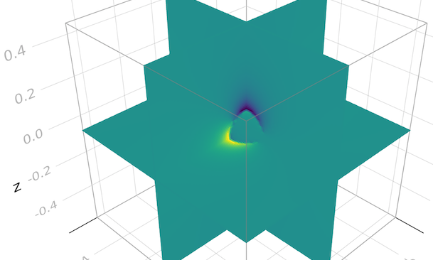

We held our first Hackathon on April 4-8 in Schwarzwald, focussing on a wide range of Julia topics. Here some attendee feedback.
Stokes 3D, AD, and multi-AMDGPU simulations
Thibault Duretz
The hackathon week has been extremely prolific, leading to numerous exciting discussions with participants about their projects, e.g., flexible composite viscous flow implementation, plasticity, marker-in-cell advection, pseudo-transient scheme, using MDoodz within Julia).
Together with Ludovic Räss, I focused his efforts on the development of a plain Julia 3D Stokes-flow code based on the pseudo-transient method (see: https://github.com/tduretz/PT3D). This script was subsequently employed by Boris Kaus and Valentin Churavy who tested the automatic differentiation tools provided by Julia, Enzyme.jl, which enables the automated computation of adjoint operators.
The aim will be to port this 3D code for usage on multiple AMD GPUs. In order to get started, I've also worked on a 2D Poisson solver (see: diffusion_2D_kp.jl in https://github.com/luraess/ROCm-MPI) that was successfully run on 4 AMD MI50 GPUs, on the Goethe HLR cluster, University of Frankfurt. This success builds upon the latest development of ImplicitGlobalGrid.jl (to be soon merged into the master branch) to support AMD GPUs via the AMDGPU.jl backend, besides existing support for CUDA.jl (Nvidia GPUs). Both the AMD and Nvidia GPU backend implementations allow for ROCm- and CUDA-aware MPI, respectively, if the MPI library was built with according support.